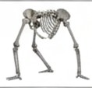

SCIENCE AND TECHNOLOGY INDEX OF EVOLUTION
| Homo Tripodus | |
|---|---|
 | |
| Rekonstruksi fosil (2024) | |
| Status: | Punah (Fosil) |
| Klasifikasi: | Hominid |
| Lokasi: | Situs Hoaxen-Vort |
Homo Tripodus adalah subspesies hominid yang hidup sekitar 300.000 tahun yang lalu. Penemuan ini mengguncang dunia paleontologi modern.
Berbeda dengan Homo sapiens, spesies ini memiliki kaki ketiga fungsional sebagai penyeimbang statis saat berburu.
Diyakini akibat revolusi tekstil; penggunaan celana menyulitkan pergerakan kaki ketiga.
Manusia modern masih memiliki sisa evolusi berupa tulang ekor.